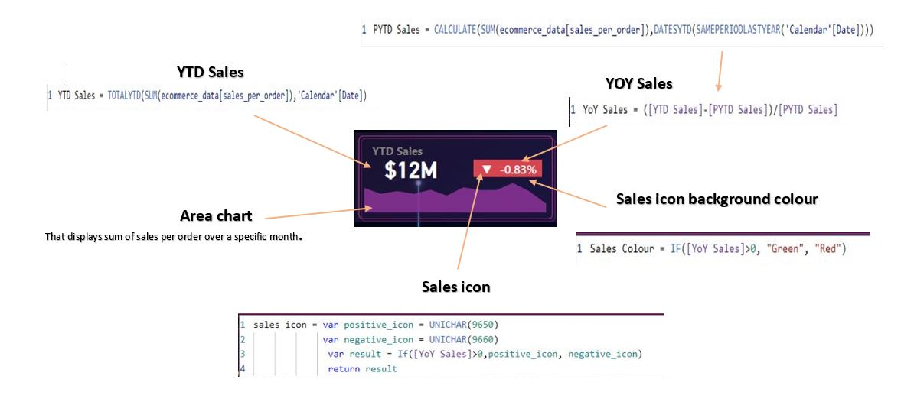
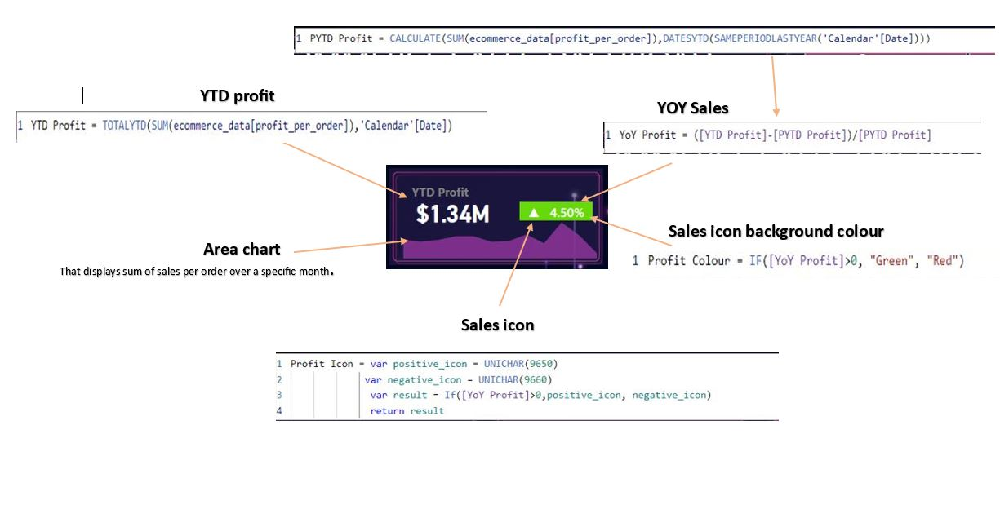
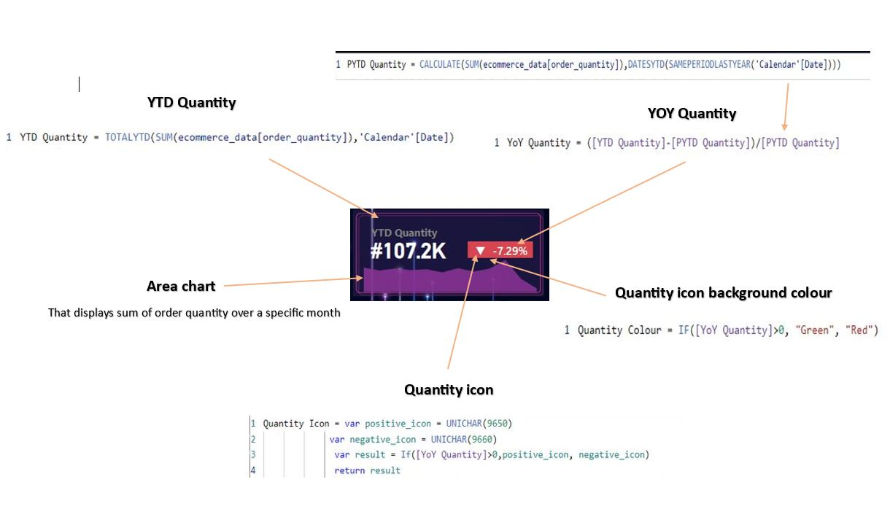
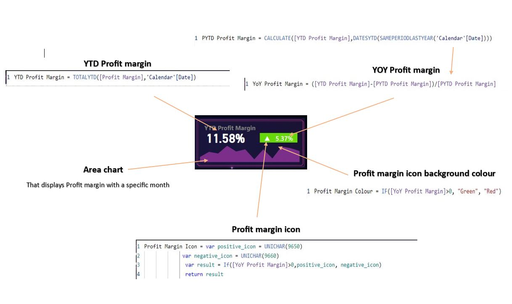
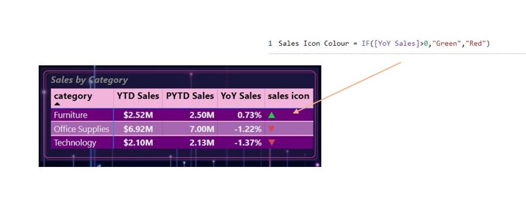

-
KPI Design.
-
Sales by Category.
-
Top 5 product by YTD Sales.
-
YTD Sales by Region.
-
YTD Sales by shipping type.
-
Bottom 5 product by YTD Sales.
-
Sales by State.
1 st KPI is YTD Sales. In this case we have to create more new measures .(for YTD Sales , PYTD Sales , YOY Sales , Sales Icon , Sales icon background colour ) and we have to create a area chart here.
2 nd KPI is YTD Profit .In this case also we have to create new meatures.(for YTD Profit , PYTD profit,YOY profit , Profit icon , profit icon background colour.) and we have to create a area chart.
3 rd KPI is YTD Quantity.
4 th KPI is YTD Profit Margin.
Create a metrix that displays the categories with YTD Sales , PYTD Sales and YOY Sales. and also we create a sales icon that changes with the colour .
Create a stacked bar chart that illustrates the highlighting the top 5 best selling product based on the YTD Sales.
Create a donut chart that shows the distibution of YTD Sales across different customer region.
Create a donut chart that represents the YTD Sales with different shipping type.
Create a stacked bar chart that illustrates the highlighting the bottom 5 selling product based on the YTD Sales.
Create a map that represents the YTD Sales with one by one customer region.